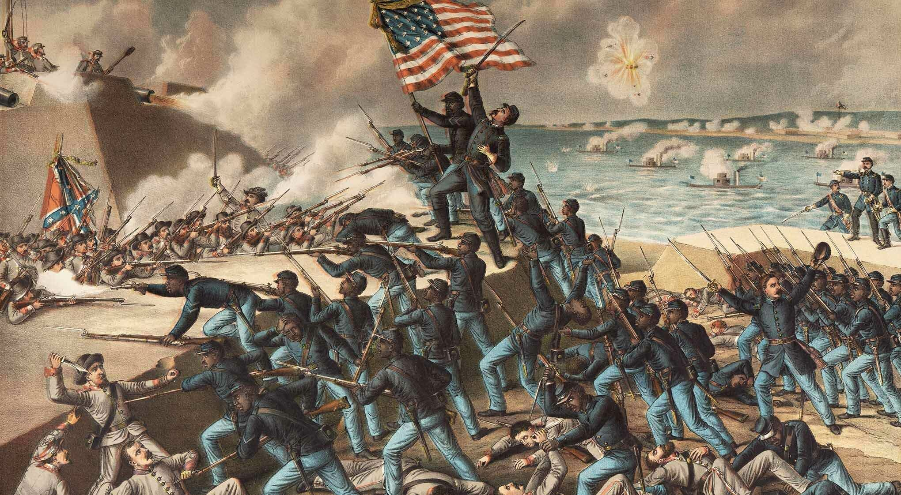
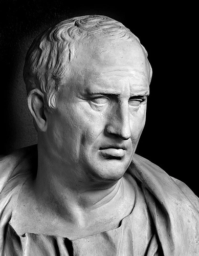

Miért tanulunk történelmet?
Ha a visszagondolunk a gyerekkori iskolai éveinkre, legalább egy maroknyi olyan gyerekre is emlékezhetünk, aki szerint a történelemóra unalmas volt. Akkor még persze nem tudták, hogy a történelem az egyik legfontosabb tantárgy, amit valaha is tanulni fognak. Hogy miért is van ez így? Nos, ennek több oka is van. Nem véletlen tartja ugyanis a régi mondás, miszerint a történelem ismétli önmagát. Azaz a világban működő társadalmi és politikai rendszerek tulajdonképpen nem változnak, hanem vissza-visszatérő elemekként működnek. Ezáltal a történelem részletes képet fest nekünk arról, hogyan működött a társadalom, a technológia és a kormányzat régen, ennek segítségével pedig jobban megérthetjük azt is, hogy hogyan működik most.
Szintén nagyon fontos, hogy ahhoz, hogy megértsük hogy kik is vagyunk mi, ahhoz önismeretre van szükség. Ennek egy jelentős részét képezi, hogy megtanuljuk, hogy hogyan illeszkedünk be az oszágunk, vagy a közösségünk nagy rendszerébe. A történelem pedig mesél a gyökereinkről, a nemzetünkről, az őseinkről. Ezáltal pedig segít megérteni, hogy mi is a mi örökségünk a világban.
A történelem, mint érték

A történelem nem csak a saját országunk, etnikai örökségeink és felmenőink megismeréséhez nélkülözhetetlen. Akkor is értékes eszköz, amikor a tőlünk különböző emberek megértéséről van szó. A globális, nemzeti és regionális történelemkönyvek segítenek megérteni, hogy más kultúrák hogyan hatnak a sajátunkra. Arra ösztönöznek bennünket, hogy jobban megbecsüljük a saját közösségeinken belüli multikulturális hatásokat is – pontosan ezért kellene mindenkinek tanulmányoznia például az afroamerikai történelmet, vagy a bevándorlók történetét függetlenül a saját kulturális hátterétől. Végül, de nem utolsó sorban a történelem lehetőséget ad arra, hogy tanuljunk a múlt hibáiból. Mert ahogy a nagy spanyol filozófus, Santayana mondta: „Akik nem tanulnak a történelemből, csak megismétlik azt”.
Ismétli-e önmagát a történelem?
Napjainkban számos olyan gazdasági és politikai folyamat zajlik, mely igencsak emlékeztet a II. világháború előtti időszakra. A társadalmi egyenlőtlenségek és ellentétek felerősödése számos országban a szélsőséges irányzatokat képviselő politikai pártok népszerűsödését eredményezi. Ez annak köszönhető, hogy a középosztály fogyása miatt az elszegényedő emberek a szélsőséges irányzatokban látják jövőjük és családjuk biztonságát. Sokszor ezek a pártok kihasználják az emberek érzéseit, és egy ellenségképet állítanak fel az elszegényedő réteg számára, mely ellen minden áron harcolni kell. Példának okáért látható Németországban a szélsőjobboldal ismételt megerősödése, vagy éppen a Balkán-félszigeten az egyre inkább erősödő, már-már fasiszta irányt képviselő nacionalista pártok térnyerése.
"A történelem az élet tanítómestere"
Az alábbi kijelentést az ókor egyik legnagyobb szónokának, Marcus Tullius Ciceronak köszönhetjük, aki pályafutása során nagy figyelmet vívott ki magának politikai ellenfelei körében. Ő is a múltra tekintett vissza, s ez alapján fogalmazta meg leghíresebb mondatát, miszerint "a történelem az élet tanírómestere". Látta, hogy a Római Birodalom előtti időkben az összes diktátor valamilyen úton-módon megbukott, ezáltala arra következtetett, hogy egy ilyen államforma hosszú ideig nem fenntartható. Kora egyeduralkodója, Julius Caesar ellen irányult eme idézet, mely Kr. e. 44 március idusán értelmet is nyert.
"Historia est magistra vitae" - Cicero
